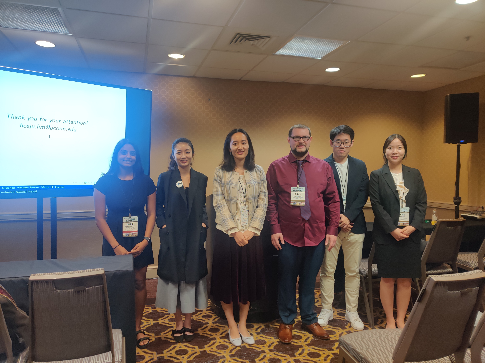
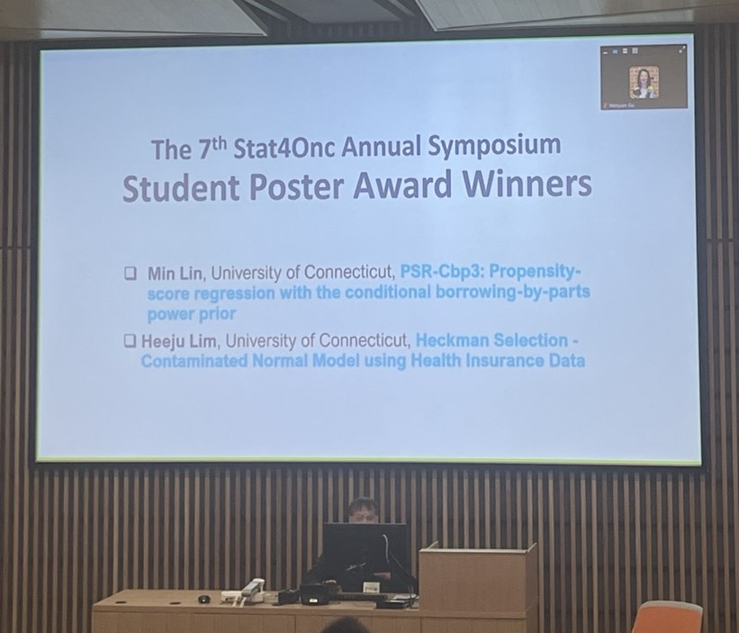
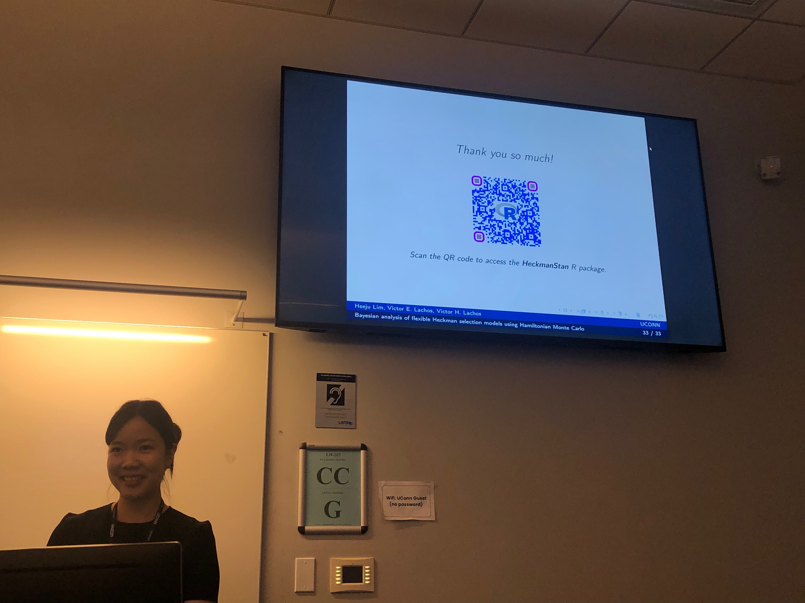
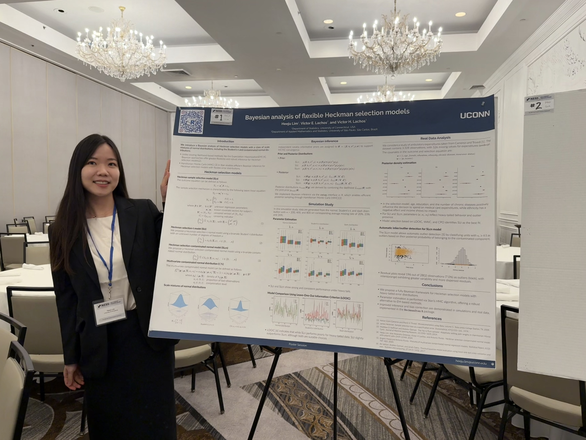
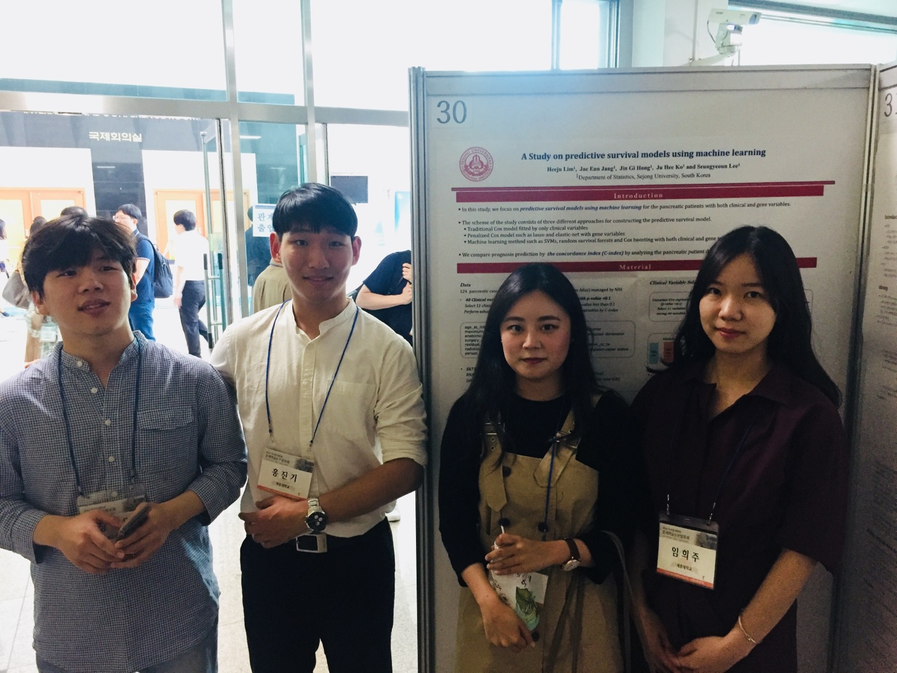

Heeju Lim
Ph.D. in Statistics
I recently earned my Ph.D. in Statistics from the University of Connecticut under the supervision of Professor Victor Hugo Lachos. My research interests include Bayesian statistics, missing data analysis, sample selection models, multivariate analysis, and statistical computing.
Education
🎓 Ph.D. in Statistics
University of Connecticut · 2019–2021, 2023–2026
Advisor: Victor Hugo Lachos
🎓 M.S. in Statistics
Korea University · 2015 – 2017
Advisor: Yoosung Park
🎓 B.S. in Statistics
Sejong University · 2010 – 2015
Advisor: Seungyeoun Lee
Publications
Multiple Heckman Selection Model
Heeju Lim, Carlos A. R. Diniz, Ofer Harel, Victor H. Lachos
Preprint · May 2026
Bayesian analysis of heavy-tailed Heckman selection models using Hamiltonian Monte Carlo
Heeju Lim, Victor E. Lachos, Victor H. Lachos
Computational Statistics · February 2026
Heckman Selection-Contaminated Normal Model
Heeju Lim, Jose Ordonez, Antonio Punzo, Victor H. Lachos
Journal of Computational and Graphical Statistics · February 2026
Review of Statistical Methods for Survival Analysis Using Genomic Data
Seungyeoun Lee, Heeju Lim
Genomics & Informatics · 2019
Presentations
Heckman Selection Contaminated Normal Model
Contributed Session | ENAR 2025 Spring Meeting. New Orleans, USA, March 2025
Poster Winner | The 7th Stat4Onc Annual Symposium. Connecticut, USA, May 2024
Student Session | The 37th New England Statistics Symposium. Connecticut, USA, May 2024


Bayesian Analysis of Flexible Heckman Selection Models
Invited Session | 2025 ICSA Applied Statistics Symposium. Connecticut, USA, June 2025
Poster | The 38th New England Statistics Symposium. Connecticut, USA, May 2025
Poster | DahShu Data Science Symposium. Connecticut, USA, October 2025


Study on Predictive Survival Models using Machine Learning
- Poster | The Korean Statistical Society conference. Chuncheon, South Korea, May 2019

Teaching Experience
Discussion Instructor
Elementary Concepts of Statistics (STAT 1000Q)
Fall 2024 · Spring 2025 · Fall 2025
University of Connecticut
Teaching Assistant
- Applied Spatio-Temporal Statistics (Fall 2025)
- Linear Models I (Fall 2024)
- Introduction to Mathematical Statistics II (Spring 2021)
- Introduction to Mathematical Statistics I (Fall 2020)
Sejong University
Teaching Assistant
- Bayesian Statistics (Fall 2018)
- Mathematical Statistics II (Fall 2014)
Korea University
Teaching Assistant
- Introduction to Database (SQL) (Fall 2015)
- Introduction to C Programming (Spring 2015)